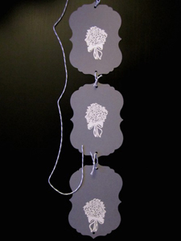
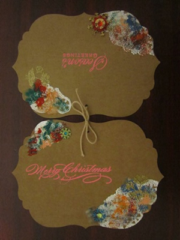
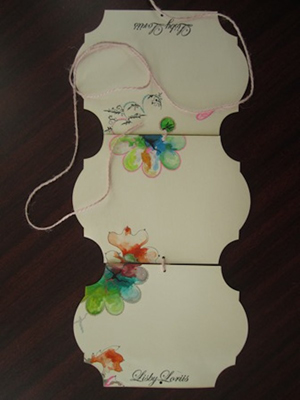

"I sat with him for three hours and we did not exchange a single word.
At the end he handed me, as he had done before, an envelope with money in it.
It would have been much nicer if he had enclosed a greeting or a loving word.
I would have been so pleased if he had. " - Eva Braun
